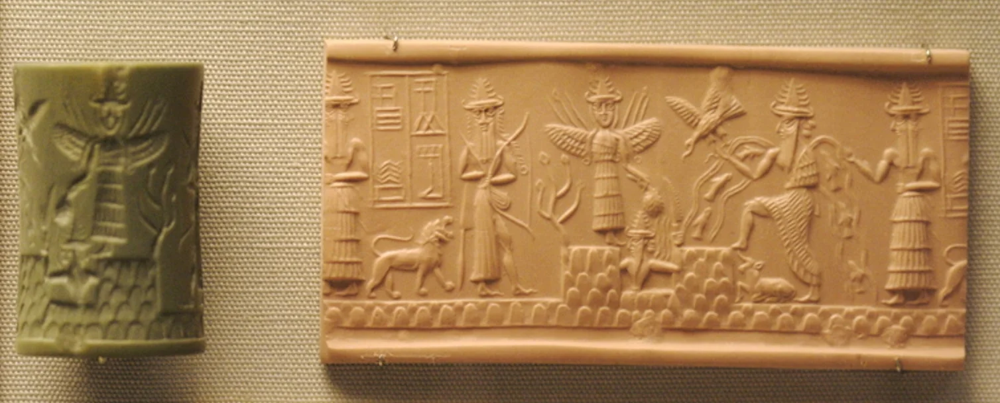
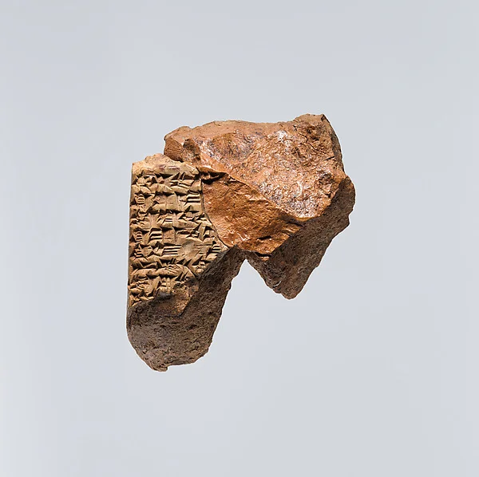
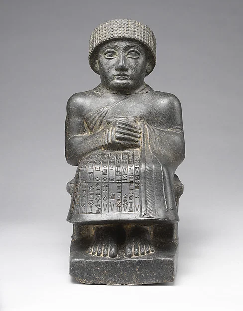

How we got the name

Every project that comes our way is like the raw material the gods in the Akkadian stories used to make man. Just as Enki set about making humanity out of clay, an idea has no form at first — and that is where we come in, to work it and craft it until it becomes something.
In the old Mesopotamian myths there is a room where the creation of mankind was carried out. For us that room is the office: the laboratory where we build concepts and ideas, and breathe life into them.
Bīt šimti

The name came from our founder Bryant Duhart’s love of history — of ancient civilisations in particular: Mesopotamian, Egyptian, Incan, and others. He drew the idea from the Akkadian bīt šimti, the house where the breath of life was breathed in, which struck him as the same thing an artist does with paint. The only difference is that our medium is digital.
Šimtu is usually translated as fate, though it means something narrower and far more useful than that. It is the character a thing is given at the moment it is made — and that moment is the one every creator knows, when you stand back from what you have built and see what it turned out to be.
The meaning

So all in all, Shimti is “The Breath of Life In Multimedia,” and we are “Bringing Art To Life” — as if we are continuing the tradition, and the work, of the Mesopotamian gods of old.
The rest of the name is more literal. We work across a wide range of digital media, which is where the multi comes from. All of it serves one end — putting more beauty, more joy and more happiness into a world that does not always have enough of them.
Look at what the megalithic builders left behind, raised by civilisations long since lost to history and time, and it is hard not to see people reaching for exactly that: beauty, precision, art. We think of this studio as carrying it on into the future.